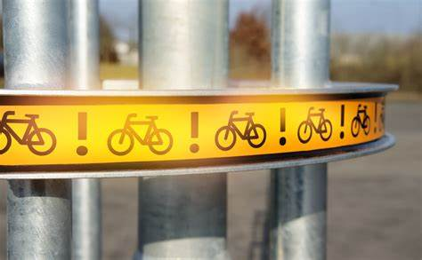
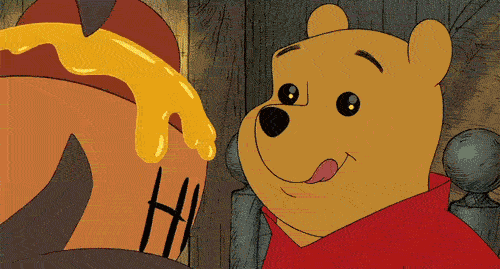

As imagens não são exatamente inseridas na página Web, elas são vinculadas às páginas. A tag <img> cria um espaço reservado para a imagem vinculada.
Os atributos src= e alt= são obrigatórios no elemento <img>. "src" recebe o link, absoluto ou relativo, para a imagem (o local da imagem), "alt" recebe o texto que aparecerá na tela caso a imagem não seja carregada por qualquer motivo e é usado por leitores de tela.
Imagem Bike Flesh

Imagem Decorative Lunch
Imagem Decorative Lunch com link quebrado
Os atributos width e height definem, respectivamente, a largura e a altura da imagem a ser exibida. Ao definir width=100%, a imagem se torna responsiva de acordo com o dispositivo, e se adéqua ao tamanho da tela em que a imagem é exibida.
Os atributos width, height e style=width:XXpx;height:XXpx" são todos válidos, porém recomenda-se usar style para que folhas de estilo CSS e a tag <style> de <head> não alterem o tamanho das imagens.
Imagem Goat Tip com os atributos width 500px e height 130px, sem style e com link para a página Links e âncoras
Imagem Goat Tip com os atributos width 500px e height 130px, com style e link absoluto
Também é possível vincular um URL absoluto no atributo src, como um link para um site externo (ex. "https://mechguru.com/wp-content/uploads/2014/11/Thick-Cylinder-Typical-Radial-and-Circumferential-Forces.png"). Sempre verificar o status de copyright de uma imagem externa antes de usá-la.
Exemplo de imagem com URL absoluto
Também é possível usar GIFs como imagens, localmente ou com URL absoluto.
GIF com URL absoluto
GIFs com URLs relativos

Mapa de imagem
A tag HTML <map> define um mapa de imagem, que é uma imagem com áreas clicáveis. Essas áreas são definidas com uma ou mais tags <area>.
Clique no canto superior esquerdo da imagem:
Como funciona o <map>?
Um mapa de imagem possibilita realizar diferentes ações dependendo da área clicada na imagem. Para criá-lo são necessários uma imagem e o código HTML que descreve as áreas clicáveis.
Insira a imagem com a tag <img>, usando o atributo usemap. O valor de usemap recebe uma hash tag (#) seguida do nome do mapa de imagem, e é usado como um link de âncora, para criar um relacionamento entre a imagem e o mapa.
Em seguida, adiciona-se o elemento <map>, que é usado para criar um mapa da imagem e é vinculado à imagem com o atributo chamado usemap.
Depois, adiciona-se as áreas clicáveis com o elemento <area>. area:c define um círculo, area:d define o padrão, toda a região da imagem, area:p define uma região poligonal e area:r define um retângulo; essas opções também podem ser adicionadas com o atributo shape="rect" (ou circle, poly, default).
As coordenadas (atributo coords="") de rect vêm em pares, p.ex. 34, 44, 270, 350 significa que o retângulo começa a 34 pixels da margem esquerda da imagem e a 44 pixels da magem superior, termina em 270 pixels da margem esquerda e a 350 pixels da margem superior. O último atributo é href= que vincula a um URL.
circle precisa das coordenadas do centro do círculo e do raio, p.ex. 337, 300, 44.
poly precisa de vários pontos de coordenadas, formando um polígono. Para cada ponto da área clicável da imagem, é necessário descobrir o X e o Y. Ex.:
Uma área clicável também pode acionar uma função JavaScript. Adiciona-se um evento click ao elemento <area> para executar a função.
Imagens de fundo
Qualquer elemento HTML pode ter uma imagem de fundo. Para fazer isso, use o atributo style com a propriedade background-image ou no elemento <style> da seção <head> da página. Se toda a página deve ter uma imagem de fundo, especifique-a no elemento <body>.
Para evitar que a imagem se repita por ser menor que a altura ou a largura da página, usar background-repeat: no-repeat no elemento <style> da seção <head> ou no CSS. NÃO ESQUEÇA O PONTO-E-VÍRGULA NO FINAL!
Para que a imagem de fundo cubra todo o elemento (página, div, caixa, etc.), definir background-size: cover no elemento <style> da seção <head> ou no CSS. NÃO ESQUEÇA O PONTO-E-VÍRGULA NO FINAL!
E para garantir que o elemento inteiro sempre esteja coberto, usar background-attachment: fixed no elemento <style> da seção <head> ou no CSS. NÃO ESQUEÇA O PONTO-E-VÍRGULA NO FINAL!
background-size: 100% 100% estica a imagem e se adéqua ao redimensionamento da janela.
Elemento <div> com imagem de fundo e background-attachment: local e background-size: cover
Elemento <div> com imagem de fundo e background-attachment: fixed e background-size: cover
Elemento "picture"
O elemento HTML <picture> fornece mais flexibilidade ao especificar recursos de imagem. Ele contém um ou mais elementos <source>, cada um específico a diferentes imagens no atributo srcset. Assim, o navegador pode escolher a imagem que melhor se ajusta à visualização atual e/ou ao dispositivo. Cada elemento <source> recebe um atributo media que define quando a imagem é mais adequada.
Com este elemento, o navegador procura pelo primeiro elemento source em que há correspondência do tamanho da mídia em relação à largura do dispositivo atual, e busca a imagem especificada no atributo srcset. O elemento img é OBRIGATÓRIO como a última tag do bloco de declaração da imagem, e é usado para fornecer retrocompatibilidade para navegadores que não oferecem suporte ao elemento picture, ou se nenhuma das tags source corresponder.
Redimensione a janela para ver esta imagem mudar:
Quando usar o elemento picture?
Se o dispositivo apresenta uma tela pequena, não é necessário carregar um arquivo de imagem grande. O navegador usará o primeiro elemento <source> que corresponder aos valores do atributo, e ignorará os elementos seguintes.
Alguns navegadores ou dispositivos podem não oferecer suporte a todos os formatos de imagem. Usando o elemento <picture> é possível adicionar imagens para todos os formatos e o navegador usará o primeiro formato que reconhecer, ignorando os restantes.
Imagem com o atributo "float" de "style"
O atributo CSS float coloca a imagem "flutuando" ao lado do texto, à esquerda (float: left) ou à direita (float: right).
Favicon
Um favicon é uma imagem pequena, portanto deve ser simples e ter alto contraste.
Para usá-lo, adicione um elemento <link> à página index.html após o elemento <title> ou coloque o favicon na raiz do projeto, junto com o arquivo index.html.